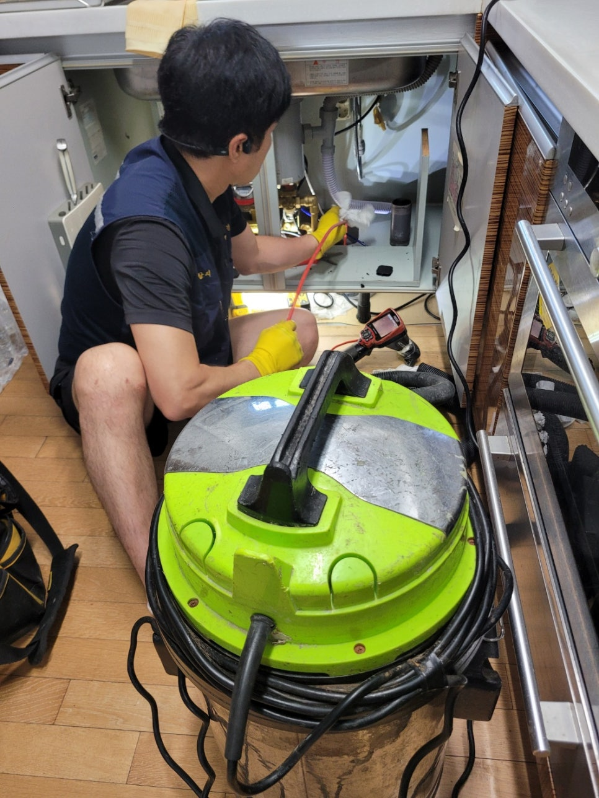
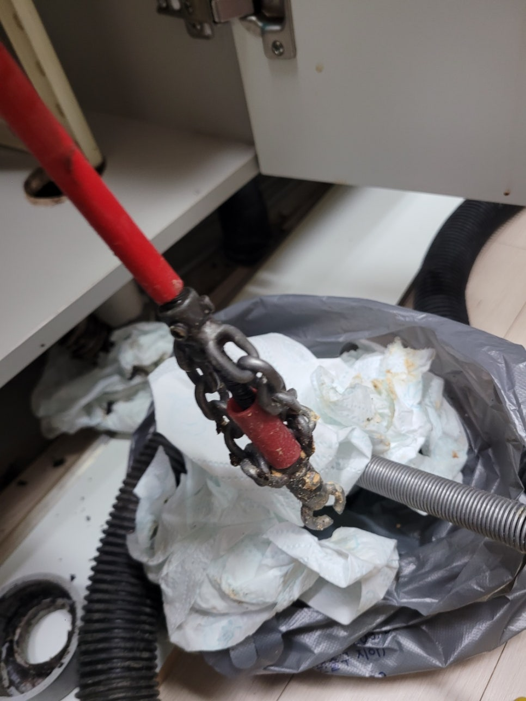
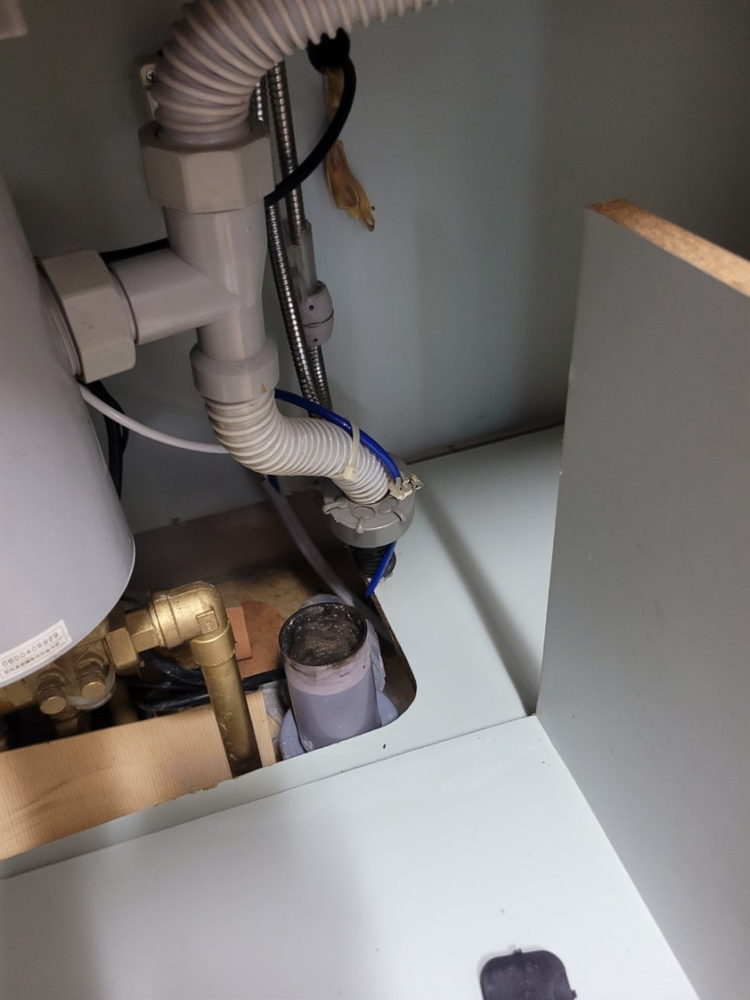
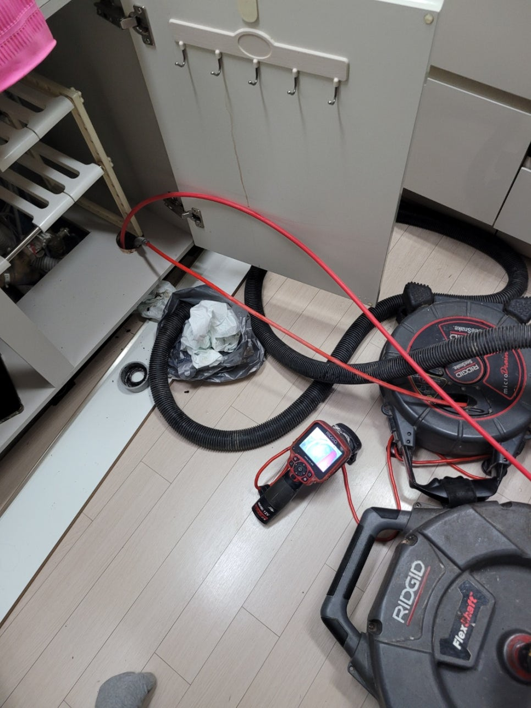
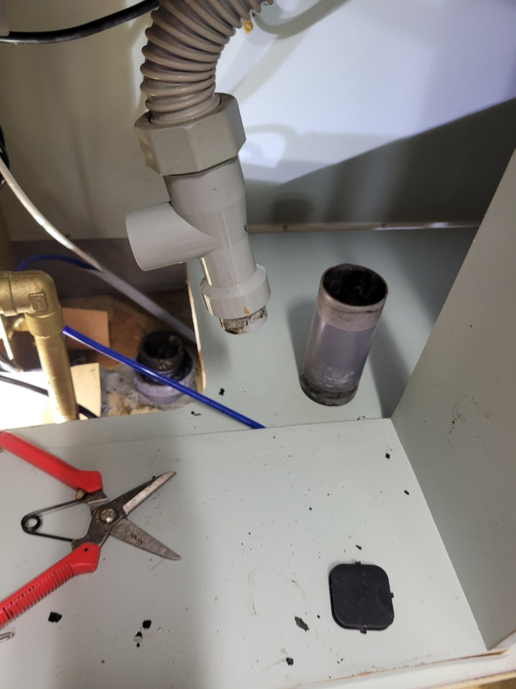
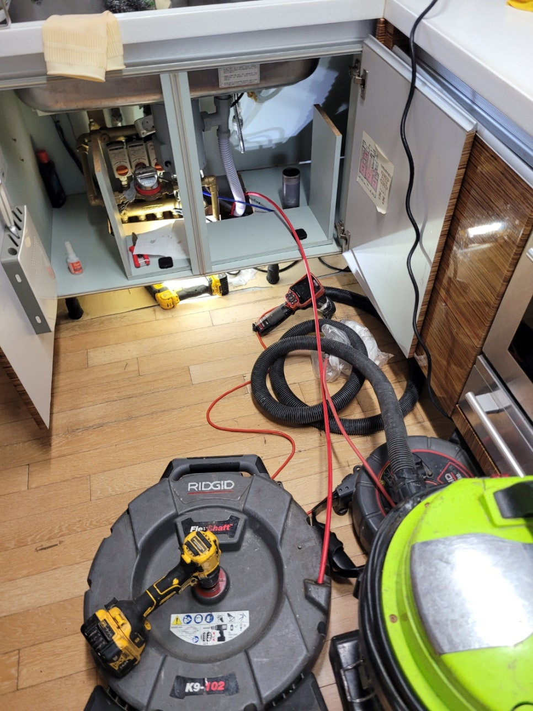
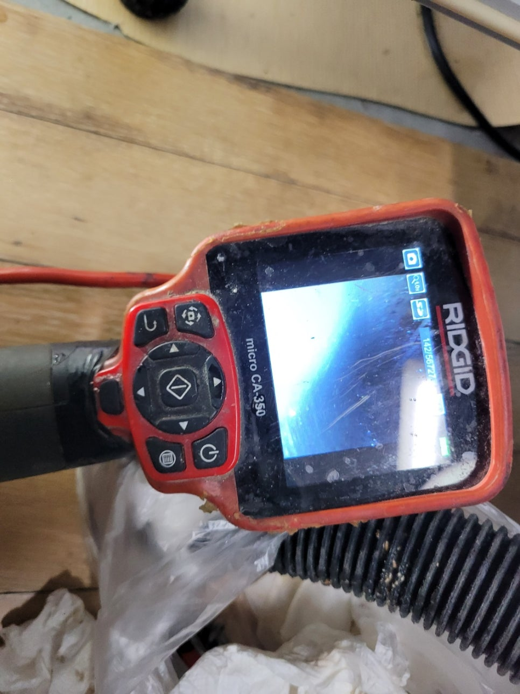

🏠 화성 향남읍 싱크대막힘 양감 하수도역류 배관뚫는업체
화성 향남 싱크대막힘 전문 시공 후기

📋 작업 개요
- 위치: 화성 향남, 향남, 화성
- 서비스 유형: 싱크대막힘, 변기막힘, 하수구막힘, 배관막힘, 맨홀막힘, 누수수리, 역류해결, 뚫는업체, 배관청소, 설비공사
- 작업 일시: 2025. 7. 30. 19:49
- 업체명: 하수구수사대 (010-5615-2118)
🔍 문제 상황
안녕하세요.
배관전문업체 "하수구수사대" 입니다.
화성 향남읍 싱크대막힘 양감 하수도역류 배관뚫는업체
집안 살림에 뜻하지 않게 트러블이 생긴다면 많은 분들이 염려하실 텐데요.
특히나 물을 계속 사용하는 주방이나 화장실에서 갑자기 막힘 문제가 발생해 물을 사용하지 못하는 상황에서는 최대한 빨리 전문가에게 연락하시는 게 좋은 방법입니다.
주방 싱크대에 물이 고이는 일이 생긴다면 음식을 하고 식재료를 다듬는 등의 일에 지장이 생기게 됩니다.
그리고 식사가 끝난 뒤 설거지 하는 것도 어려워지기 때문에 막힘 증상이 있으면 얼른 전문 업체를 부르시는 게 좋다는 점 잊지마세요.
얼마 전에도 한 고객님 댁에 막힘 증상이 나타나서 꼼꼼히 점검하고 해결해 드리고 왔습니다.
이번 현장에서는 싱크대를 교체한 지 얼마 되지 않았음에도 싱크대 막힘이 나타났다는 게 의아하긴 했어요.
고객님이 직접 해결하지 못하는 문제이다 보니 전문 업체인 저희한테 전화하신 것 같습니다.
현장에 도착해서 제일 먼저 점검한 곳은 주방 하부장 아래였죠.
저희가 봤을 땐 벌써 물이 흘러서 흥건히 젖은 것은 물론 그 양도 매우 많아 보였어요.

🔎 원인 분석
💡 전문가 진단: 정밀 진단 장비를 사용하여 슬러지의 고착 여부를 판명하고 타격/세척 작업을 실시했습니다.
여기서 방치하게 되면 곰팡이가 피는 것은 물론 아래층에도 누수가 발생할 수 있어서 빠르게 작업을 진행했습니다.
첫 번째 작업을 위해서 막힌 싱크대에 달려있는 주름관을 분리해 확인해 보니 역시 이물질이 잔뜩 있는 모습이었습니다.
까만색 얼룩이 찌꺼기인데 이런 것들이 주름관 벽면에 달라붙어 떨어지지 않는 것입니다.
심지어 하수도 입구에도 이것들이 잔뜩 쌓여있어서 확실히 없앨 수 있도록 석션기를 사용하기로 했어요.
석션기는 주름관에 붙어있는 이물질은 물론 하수관 깊숙한 곳에 있는 찌꺼기들까지 흡입 가능한 기계인데 이러한 막힘 문제를 해결할 때 적절한 장비입니다.
이물질로 인해 입구 부분이 막힌 상황도 이 석션기를 이용해 쉽게 해결할 수 있어요.
본격적으로 배관을 뚫기 전 석션 작업을 해서 배관 속을 먼저 청소해 주는데, 문제 해결 방식을 찾아내는 과정이라고 생각하시면 됩니다.
석션기를 최대한으로 돌려보아도 문제가 해결되지 않는 상태여서 배관 내부를 보다 정확하게 확인하기로 했어요.
이번에는 배관 내시경 장비를 이용해서 배관 깊숙한 곳까지 파악하는 것인데요.
지금 보시는 화면에서는 모든 부분이 빨갛게 찍혀있죠.
장비 헤드부분에 전등이 부착되어 있어서 그 불로 기름때를 비추면 이렇게 빨간색으로 보이게 됩니다.
즉, 하구관 내에 기름때가 잔뜩 쌓여있다면 화면으로 볼 때 빨갛게 나타나는 것이죠.
보다 꼼꼼하게 살펴보니 배관 청소가 문제인 것 같았습니다.

🔧 작업 과정
이번 현장에서 막힘 증상이 생기는 근본적인 이유는 하수관 내부에 오랫동안 쌓여서 굳어진 기름찌꺼기라고 판단하게 되었습니다.
그렇기 때문에 음식물 찌꺼기를 제거할 때 적합한 장비로 완벽하게 제거해드리기로 결정하였습니다.
이 작업을 할 때 주로 이용하는 전문 장비 플렉스 샤프트를 보여드리겠습니다.
샤프트 케이블 끝에 헤드가 붙어있는데 체인 형태로 만들어져 큰 이물질도 잘게 부수어 제거하기 쉽도록 하는 것입니다.
샤프트로 잘게 부수면 처음에는 빠지지 않았던 기름때들도 모두 하수관 외부로 내보낼 수 있습니다.
단, 하수관의 구조와 덩어리의 위치를 확인하면서 장비를 움직여야 해요.
한 번 작업을 시작할 때마다 배관 내시경 카메라를 이용해서 배수구 안쪽을 구석구석 살펴보고, 중간중간 석션도 잊지 않고 기름찌꺼기 없는 깨끗한 배관을 만들 수 있게 신경써 드렸어요.
저희 업체는 겉으로 보이는 것만 해결하고 넘어가지 않습니다.
문제가 발생한 확실한 이유를 알아내고 제거하여 싱크대 막힘 증상을 해결하고 배관 내부도 꼼꼼히 살펴보고, 남아있는 슬러지도 제거해 드렸습니다.
통수 테스트 결과, 하수가 막힘 없이 원활하게 배수되는 것을 보아 공사가 잘 끝났음을 알 수 있었답니다.
모든 과정이 끝나고 나면 석션기의 용기에 배수관 내부에 들어있던 기름때가 보관됩니다.
잘 살펴보면 바닥에 각종 덩어리들이 내려앉은 것을 확인할 수 있는데요.
이런 찌꺼기들은 배관에 그냥 부으면 막히기 때문에 거름망으로 이물질들을 모두 거른 다음 따로따로 처리해야 됩니다.
대부분의 경우 여기까지 하면 작업이 끝나죠.
이번에 방문했었던 현장의 주름관은 매우 오래된 상태여서 쓸 수가 없었어요.
이 주름관도 새로 교체하니 반복되었던 싱크대 막힘이 쉽게 해결되었어요.
부엌 싱크대가 자꾸 막히는 경우에는 시중에 파는 하수관 세정제를 이용해서는 뚫기가 힘듭니다.
또한 슬러지가 많이 쌓여있는 경우에도 전문 장비를 이용해 신중하게 작업해야 합니다.
전문가의 도움을 받으셔야만 신속하게 문제가 해결된다고 말씀드립니다.
그러니 내시경 카메라나 배관 막힘 전문 도구를 보유하고 있는 업체를 이용하셔야 작업이 효율적으로 진행된다는 점을 잊지 마시기 바래요.


✅ 작업 완료
막힘 때문에 배관을 점검해야 할 경우 장비와 기술력을 전부 갖추고 있는 저희쪽으로 문의주시면 빠르고 신속하게 해결해 드리겠습니다.
하수구수사대 010 2340 2118
경기도 화성시 향남읍 상신하길로328번길 26 5층 505호
#향남읍하수구막힘 #향남읍싱크대막힘 #향남읍싱크대역류 #향남읍배수관막힘 #향남읍배관뚫는곳 #향남읍설비 #향남읍맨홀막힘 #향남읍하수구뚫는업체 #향남읍변기막힘
#양감하수구막힘 #양감싱크대막힘 #양감싱크대역류 #양감하수구역류 #양감화장실막힘 #양감설비 #양감하수구뚫는곳 #양감하수구뚫는업체
#양감변기막힘




⚠️ 베란다 누수 및 방수 관리 방법
- ✅ 비가 많이 올 때 창틀 주변이나 아래층 천장에 얼룩이 생기는지 정기적으로 확인해 보세요.
- ✅ 우수관 주변 실리콘 마감이 들뜨거나 깨진 틈새가 있는지 손상 여부를 수시로 체크하세요.
- ✅ 베란다 바닥 타일의 줄눈(메지)이 소실되면 그 틈으로 물이 침투하여 누수가 유발됩니다.
- ✅ 누수 의심 증상 발견 시 방치하면 아래층 손실이 커지므로 즉시 전문가의 진단을 받으십시오.
💡 핵심 정리
- 확실한 장비 작업(내시경 점검 및 샤프트 스케일링)으로 원인을 뿌리 뽑습니다.
- 작업 후 1년 이내에 동일한 부위 재발 시 100% 무상 A/S 서비스를 보장합니다.
- 서울 · 경기 · 인천 전 지역에 24시간 언제든 긴급 출동할 수 있도록 항시 대기 중입니다.
❓ 자주 묻는 질문 (FAQ)
🚨 화성 향남 싱크대막힘 문제로 고민이신가요?
정확한 원인 진단과 확실한 시공으로 재발 없는 해결을 약속드립니다.
24시간 긴급 출동 | 서울 · 경기 · 인천 전지역 | 1년 내 재발 시 무상 A/S